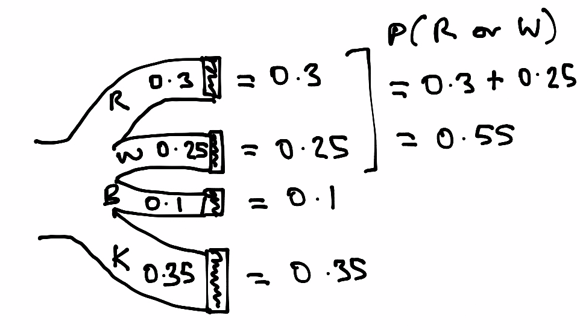

Laws of probability#
Show code cell content
# Run this cell; do not change it.
import numpy as np
# Make random number generator.
rng = np.random.default_rng()
# Make printing of numbers a bit neater.
np.set_printoptions(precision=4, suppress=True)
import matplotlib.pyplot as plt
# Make the plots look more fancy.
plt.style.use('fivethirtyeight')
There are two important laws of probability that we will be using. Do not worry about the details of the text below for now, this page explains what the rules mean.
Multiplication rule: We get the probability of both of two events happening by multiplying the probability of the first event by the probability of the second event, given we know the first has occurred.
Addition rule: We get probability of either of two mutually exclusive events happening by adding the probability of the first event to the probability of the second event.
A car park#
Imagine there are 100 cars in a car park.
30 cars are red.
Imagine next that there’s a equal chance for any of the cars to leave the car park first.
What is the probability that the first car is red?
By the set up, we are saying that 30% of time the first car to leave will be read, so the probability is 0.3.
That is, in the long run we would expect a red car to leave first \(30 / 100\) = 30% of the time.
p_red = 30 / 100
p_not_red = 70 / 100
We can also write this mathematically:
In mathematics we like to keep our notation concise, so write \(P(\text{red})\) as \(P(R)\) and \(P(\text{not red})\) as \(P(N)\):
We can draw this in a tree diagram.

Here’s a simulation to confirm:
car_colors = ['red', 'not red']
color_ps = [0.3, 0.7]
n_iters = 100_000
first_leavers = np.repeat(['not yet known'], n_iters)
for i in range(n_iters):
# Select a single car at random
first_leavers[i] = rng.choice(car_colors, p=color_ps)
p = np.count_nonzero(first_leavers == 'red') / n_iters
p
0.30006
As we expect from the law of large numbers, the proportion of red is very close to the initial probability of red.
Addition rule#
Imagine that, for some reason, of the not-red cars, 25 are white, 10 are blue and 35 are black. Let’s say that a car cannot be more than one color — there are no red and white cars, for example.
Put another way, the colors red, white, blue and black are mutually exclusive — if a car is red it cannot also be white or blue or black.
p_red = 0.3
p_white = 0.25
p_blue = 0.10
p_black = 0.35
# Notice that these exhaust the probabilities (sum to 1).
p_red + p_white + p_blue + p_black
1.0
In mathematical notation (with \(B\) for blue and \(K\) for black):
What is the probability of getting either a red or a white car?
Let’s do a simulation:
car_colors = ['red', 'white', 'blue', 'black']
color_ps = [0.3, 0.25, 0.10, 0.35]
n_iters = 100_000
first_leavers = np.repeat(['not yet known'], n_iters)
for i in range(n_iters):
# Select a single car at random
first_leavers[i] = rng.choice(car_colors, p=color_ps)
p = (np.count_nonzero(
(first_leavers == 'red') | (first_leavers == 'white'))
/ n_iters)
p
0.55177
Notice that this is very close to:
p_red + p_white
0.55
Why? Consider the separate probabilities. There is a 30% chance of getting a red car. There is a 25% chance of getting a white car. In the long run therefore, we’ll tend to end up with 30% red, 25% white, and therefore 55% [either red or white].
We can see this with a tree diagram.

This is the addition rule of probability.
Addition rule: To get the probability of either of two things happening, where those two things cannot happen at the same time, we add the probability of the first thing happening (e.g getting a red car) to the probability of the second thing happening (e.g getting a white car).
This rule only applies when the things that can happen are mutually exclusive. In our case, if the car is red, it cannot also be white or blue or black. The fact that this is a red car excludes the possibility it is white or blue or black — and vice versa.
Call getting a red car — a red car event — and getting a white car a white car event. So \(P(R)\) is the probability of the red car event, \(P(W)\) is the probability of the white car event, and we can write the addition rule in this case as:
Now, even more generally, iff event type \(A\) and event type \(B\) are mutually exclusive, then:
Multiplication rule#
Now consider another aspect of the cars – the make.
Let’s say this is a car park for taxis, so there are lots of Toyotas. In fact, let’s say, overall, that 50% of the cars in the car park are Toyotas.
However, red is just not a favored color for Toyotas, at least among these owners.
Of the 30 (30%) of red cars, only 20% are Toyotas.
Think of this probability as the probability that a car is Toyota, given that is red:
This is a conditional probability, because it’s a probability (of being a Toyota) conditional on the fact the car is red.
Because this is such a common kind of statement in probability, there’s a special symbol for it — |. Read that symbol as “given”. So read:
as “the probability of the car being a Toyota, given that we know the car is red”.
In code:
p_toyota_given_red = 0.2
Now — what is the probability that the first car leaving the car park will be a red Toyota? That is, the probability that the car is both red and a Toyota.
You might think this — I know that 30 / 100 cars are red, I know that 20% of these red cars are Toyotas, 30 * 0.2 = 6 — so there are 6 red Toyotas, and therefore the probability of a red Toyota is 0.06. You’d be right, and you have just applied the multiplication rule below. But bear with us while we go through the logic; we have deliberately chosen a simple case here, where the multiplicaiton rule is more obvious, but let’s establish the general case.
Write the probability of red and Toyota as:
How do we combine the information \(P(R) = 0.3\) and \(P(\text{Toyota} | R = 0.2\) to get \(P(\text{Toyota} \text{ and } R)\)?
We can do a simulation:
car_colors = ['red', 'white', 'blue', 'black']
color_ps = [0.3, 0.25, 0.10, 0.35]
car_makes = ['Toyota', 'not Toyota']
ps_toyota_given_red = [0.2, 0.8]
n_iters = 100_000
first_leaver_makes = np.repeat(['not yet known'], n_iters)
for i in range(n_iters):
first_leaver = rng.choice(car_colors, p=color_ps)
if first_leaver == 'red':
# Only select a make if color was red.
first_leaver_makes[i] = rng.choice(car_makes,
p=ps_toyota_given_red)
p = (np.count_nonzero(
first_leaver_makes == 'Toyota') # Only set for red cars
/ n_iters)
print('Proportion of cars that are red Toyotas', p)
Proportion of cars that are red Toyotas 0.05912
Notice that this is very close to:
p_toyota_given_red * p_red
0.06
Again — we can show ourselves this must be true with a tree (Sankey) diagram.

We have just discovered the:
Multiplication rule: To get the probability of both of two things happening, we multiply the probability of the first thing happening (e.g getting a red car) by the probability of the second thing happening, once we know the first (here, the probability of getting a Toyota once we know we have a red car).
In our case, in notation:
In general, for two events \(A\) and \(B\):
Rule: to find the probability of both of two events, we can multiply the probability of the first event, by the conditional probability of the second event, given the first. This is the only situation in which we can multiply to get the probability of and.
The multiplication trap#
One common mistake in using the multiplication rule, is to forget that the probability we multiply by is conditional. That is to forget the \(P(B | A)\) part, and just use \(P(B)\).
In our example above, of all cars in the car park — 50% were Toyotas — the car park is popular with taxis. But only 20% of the red cars were Toyotas. It turns out that red is not a popular color with owners of Toyotas.
So then, overall:
This is an unconditional probability — it doesn’t take into account (is not conditional on) the color of the car.
A common mistake is to think that this figure — the unconditional probability (here \(P(\text{Toyota}) = 0.5\)) is the probability we want — when we actually need the conditional probability \(P(\text{Toyota} | R)\).
We can only use an unconditional probability in this situation when it the same as the conditional probability, and this would only be true when — in our case — the red and the not-red cars have exactly the same chance of being Toyota. Put mathematically:
In that special case — where the conditional probability is the same for both red and not red — we say that the chance of getting a Toyota is independent of the red / not red color. And that is not true in our case. In our case:
Put another way, in our case, the make of the car is not independent of the red / not red color.
The multiplication rule then only applies when multiplying by a conditional probability. Only when the conditional probability happens to be the same as the unconditional probability, can we multiply by the unconditional probability. The conditional and unconditional probabilities are the same when the events of interest are independent. In fact that is what independent means, in terms of probability.
A last refinement of notation#
We can now refine our addition rule above, by putting our mutually exclusive rule more formally.
Remember we said that:
when \(A\) and \(B\) are mutually exclusive. We can now write that mutually exclusive rule as:
(\(A\) and \(B\) never occur together).